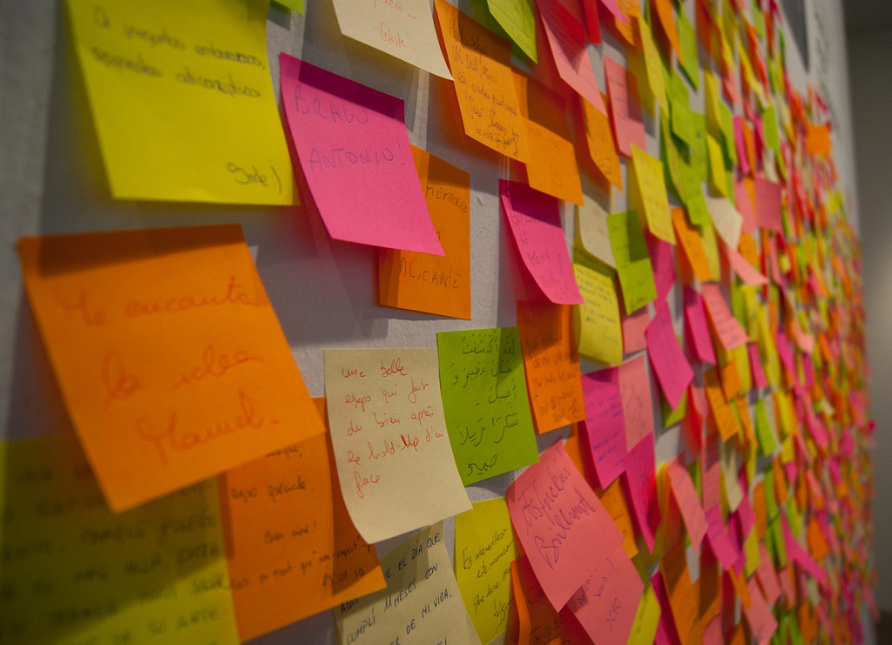

Agilité et développeurs
La guerre est déclarée ?
Cécilia Bossard
Développeuse, agiliste, boîte à outils, ...
Jean Paliès
Développeur freelance
Petit sondage
Constat
L'agilité, c'est notre quotidien. Ce n'est plus un sujet de discussion
L'agilité, c'est du bullshit marketing
L'agilité, c'est plein de process, de réunions, ... on n'a plus le temps de bosser
L'agilité, c'est une volonté de la direction
Photo by Ken Treloar on Unsplash
Perversion de l'agilité
The Agile movement got so involved with promoting conferences and with certifying Scrum Masters and Project Managers that they abandoned the programmers, and the values and disciplines of Craftsmanship.
Uncle Bob, August 2018
Perversion de l'agilité
Refaisons l'histoire
RAD / DSDM
XP
Manifeste Agile
Scrum
Scrum Alliance, ...
Photo by Erol Ahmed on Unsplash
Perversion de l'agilité
Refaisons l'histoire
L'agilité créée par et pour des développeurs
Popularisation de Scrum
Monétisation de l'agilité
Photo by Erol Ahmed on Unsplash
Perversion de l'agilité
L'agilité est entrée dans les moeurs
Mais comme toutes les choses qui deviennent populaires, elles perdent peu à peu leur essence
Photo by Joshua Hoehne on Unsplash
Perversion de l'agilité
The Agile movement was started by programmers, and software professionals, who held the ideals of Craftsmanship dear.
But then the project managers rushed in and said: “Wow! Agile is a cool new variation on how to manage projects.”
Uncle Bob, August 2018
Un outil imposé
Un outil imposé
Changement des priorités
Pas de specs
ROI rapide
Reporting détaillés, KPI
Recyclage des chefs de projet
Ca fait cool
JIRA

Une gestion par les indicateurs
Les outils supposés apporter de la transparence se retournent contre leurs auteurs.
Les indicateurs biaisent la relation au travail.
Une gestion par les indicateurs
On prend uniquement les petites tâches pour montrer qu'on avance vite
Objectivation des Scrum masters sur le burndown
Surtout pas de rouge dans les "mood boards"
...
Photo by rawpixel on Unsplash
Un monde de Bisounours ?
Idéalisation de l'image d'une équipe agile.
Qui se heurte violement à la réalité de certaines entreprises.
Photo by rawpixel on Unsplash
Un monde de Bisounours ?
Les rétrospectives
On ne parle pas des sujets qui fâchent (surtout pas devant le client).
Actions jamais réalisées.
Photo by Sydney Sims on Unsplash
Excellence technique
The tragedy is that the Agile movement was supposed to promote the ideals of Craftsmanship; and it failed. Horribly.
Uncle Bob, August 2018
Excellence technique
"On est agile dans l'équipe ! On fait de la revue de code, de l'intégration continue, parfois quelques tests, des estimations collectives, ..."
Faire agile != être agile
Photo by David Siglin on Unsplash
Soyez pragmatiques, pas dogmatiques !
Merci !
Et un grand merci à :
Tous les dev qui ont répondu à nos questions
Dorothée, Pierrick et Grégoire d'Agile Garden pour nos riches échanges
Aurélie de Conserto pour notre discussion très instructive
Les amis d'AOF
Photo by Eric Ward on Unsplash

 @ceciliaBossard
@ceciliaBossard